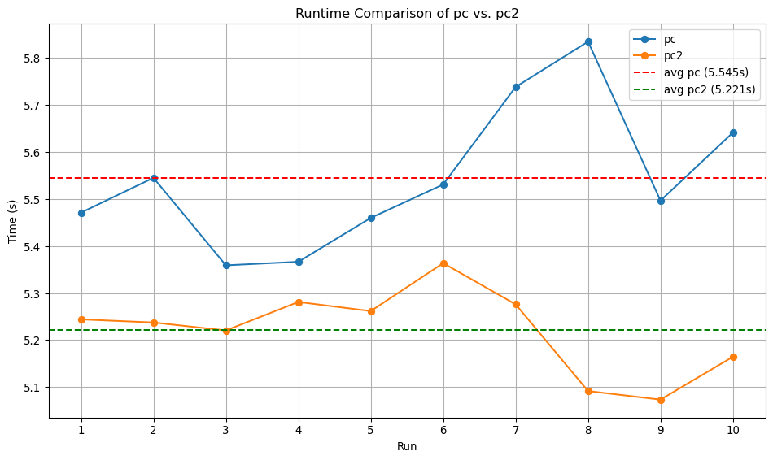

Die Ausgabe ist inkonsistent – bei mehreren Programmausführungen erscheinen unterschiedliche Werte für counter. Dies liegt an einer Race Condition, da beide Threads gleichzeitig und ohne Synchronisation auf die gemeinsame Variable counter zugreifen. Dadurch können Zwischenergebnisse überschrieben oder verloren gehen, je nachdem, wie der Scheduler die Threads abwechselnd ausführt.
Dieses Programm vermeidet das Race Condition-Problem, indem beide Threads einen synchronized-Block verwenden, der auf Counter.class synchronisiert ist. Das bedeutet:
Nur ein Thread darf gleichzeitig den Block betreten.
Der andere Thread muss warten, bis der erste fertig ist und den Lock freigibt.
Dadurch wird sichergestellt, dass keine gleichzeitigen Zugriffe auf die gemeinsame Variable counter stattfinden.
Aufgabe 3
Unten folgt der Quellcode zur verbesserten Lösung des Producer-Consumer-Problems (pc2.c am Ende des Dokuments). In dieser Version wird Busy Waiting durch eine effiziente Synchronisation mithilfe eines Mutexes und einer Condition Variable ersetzt.
Der Code befindet sich auch im beigefügten Zip-Archiv im Ordner A3. Dort kann das Programm wie folgt kompiliert und ausgeführt werden:
make./pc2
Diese Implementierung gewährleistet eine korrekte und effiziente Koordination zwischen Producer- und Consumer-Threads:
Die gemeinsame Warteschlange wird durch einen Mutex geschützt.
Threads, die auf eine Bedingung warten, verwenden pthread_cond_wait() innerhalb einer while-Schleife, um Spurious Wakeups korrekt zu behandeln.
Ist die Warteschlange leer, schlafen die Consumer, bis sie ein Signal erhalten; ist sie voll, wartet der Producer entsprechend.
Durch das gezielte Aufwecken via pthread_cond_signal() oder pthread_cond_broadcast() wird unnötiger CPU-Verbrauch durch aktives Warten vermieden.
Insgesamt ist diese Lösung robuster und skalierbarer als die ursprüngliche Variante mit Busy Waiting – insbesondere bei mehreren Consumer-Threads und höherer Auslastung.
pc2.c
#include <stdio.h>#include <stdlib.h>#include <pthread.h>#include "mylist.h"// Mutex to protect access to the shared queuepthread_mutex_t queue_lock;// Single condition variable used for both producers and consumerspthread_cond_t cond_var;// Shared buffer (a custom linked list acting as a queue)list_t buffer;// Counters for task managementint count_proc =0;int production_done =0;/********************************************************//* Function Declarations */staticunsignedlong fib(unsignedint n);staticvoid create_data(elem_t **elem);staticvoid*consumer_func(void*);staticvoid*producer_func(void*);/********************************************************//* Compute the nth Fibonacci number (CPU-intensive task) */staticunsignedlong fib(unsignedint n){if(n ==0|| n ==1){return n;}else{return fib(n -1)+ fib(n -2);}}/* Allocate and initialize a new task node */staticvoid create_data(elem_t **elem){*elem =(elem_t*) malloc(sizeof(elem_t));(*elem)->data = FIBONACCI_MAX;}/* Consumer thread function */staticvoid*consumer_func(void*args){ elem_t *elem;while(1){ pthread_mutex_lock(&queue_lock);// Wait if the queue is empty and production is not yet completewhile(get_size(&buffer)==0&&!production_done){ pthread_cond_wait(&cond_var,&queue_lock);}// Exit condition: queue is empty and production has finishedif(get_size(&buffer)==0&& production_done){ pthread_mutex_unlock(&queue_lock);break;}// Remove an item from the queue remove_elem(&buffer,&elem);// Wake up a potentially waiting producer pthread_cond_signal(&cond_var); pthread_mutex_unlock(&queue_lock);// Process the task fib(elem->data); free(elem); printf("item consumed\n");}return NULL;}/* Producer thread function */staticvoid*producer_func(void*args){while(1){ pthread_mutex_lock(&queue_lock);// Wait if the buffer is fullwhile(get_size(&buffer)>= MAX_QUEUE_LENGTH){ pthread_cond_wait(&cond_var,&queue_lock);}if(count_proc < MAX_COUNT){// Create and append a new task to the queue elem_t *elem; create_data(&elem); append_elem(&buffer, elem); count_proc++; printf("item produced\n");// Wake up one waiting consumer pthread_cond_signal(&cond_var);}// If production is done, notify all consumers and exitif(count_proc >= MAX_COUNT){ production_done =1;// Wake up all consumers waiting on cond_var so they can check the exit condition pthread_cond_broadcast(&cond_var); pthread_mutex_unlock(&queue_lock);break;} pthread_mutex_unlock(&queue_lock);}return NULL;}/* Main function */int main (int argc,char*argv[]){ pthread_t cons_thread[NUM_CONSUMER]; pthread_t prod_thread;int i;// Initialize mutex and condition variable pthread_mutex_init(&queue_lock, NULL); pthread_cond_init(&cond_var, NULL); init_list(&buffer);// Start consumer threadsfor(i =0; i < NUM_CONSUMER; i++){ pthread_create(&cons_thread[i], NULL,&consumer_func, NULL);}// Start producer thread pthread_create(&prod_thread, NULL,&producer_func, NULL);// Wait for all consumer threads to finishfor(i =0; i < NUM_CONSUMER; i++){ pthread_join(cons_thread[i], NULL);}// Wait for producer thread to finish pthread_join(prod_thread, NULL);// Cleanup pthread_mutex_destroy(&queue_lock); pthread_cond_destroy(&cond_var);return0;}
Laufzeitvergleich von pc und pc2
Zur Überprüfung der Effizienzverbesserung durch den Einsatz von Condition Variables wurde folgendes Bash-Skript verwendet, das beide Programme je 10-mal ausführt und die durchschnittliche Laufzeit berechnet:
#!/bin/bashRUNS=10PC="./pc"PC2="./pc2"measure_average_runtime(){PROGRAM=$1TOTAL=0echo"Running $PROGRAM..."for i in$(seq 1 $RUNS);doSTART=$(date +%s.%N)$PROGRAM> /dev/nullEND=$(date +%s.%N)RUNTIME=$(echo"$END - $START"|bc)echo" Run $i: $RUNTIME seconds"TOTAL=$(echo"$TOTAL + $RUNTIME"|bc)doneAVG=$(echo"scale=4; $TOTAL / $RUNS"|bc)echo"Average runtime of $PROGRAM: $AVG seconds"echo}echo"Measuring $RUNS runs of $PC and $PC2..."echomeasure_average_runtime$PCmeasure_average_runtime$PC2
Ausgeführt wurde das Skript mit:
./benchmark_pc.sh
Dabei ergaben sich folgende Laufzeiten:
Measuring 10 runs of ./pc and ./pc2...
Running ./pc...
Run 1: 5.471139729 seconds
Run 2: 5.545249360 seconds
Run 3: 5.359090183 seconds
Run 4: 5.366634866 seconds
Run 5: 5.459910579 seconds
Run 6: 5.531161091 seconds
Run 7: 5.738575161 seconds
Run 8: 5.835055657 seconds
Run 9: 5.496744966 seconds
Run 10: 5.641529848 seconds
Average runtime of ./pc: 5.5445 seconds
Running ./pc2...
Run 1: 5.244080521 seconds
Run 2: 5.237442233 seconds
Run 3: 5.220517776 seconds
Run 4: 5.281094089 seconds
Run 5: 5.261722379 seconds
Run 6: 5.363685993 seconds
Run 7: 5.276107150 seconds
Run 8: 5.091557858 seconds
Run 9: 5.073267276 seconds
Run 10: 5.164472482 seconds
Average runtime of ./pc2: 5.2213 seconds
Die Ergebnisse zeigen, dass pc2 im Schnitt etwas schneller ist als pc (5.22 s gegenüber 5.54 s), was den Effizienzgewinn durch den Verzicht auf aktives Warten bestätigt.
Die Dateien benchmark_pc.sh und benchmark_results.txt befinden sich im Ordner A3 des ZIP-Archivs.
Zur Veranschaulichung wurde mit dem folgendnen Python script zusätzlich ein Diagramm erstellt, das die Laufzeiten von pc und pc2 über zehn Durchläufe hinweg zeigt. Die Durchschnittslinien verdeutlichen, dass pc2 im Mittel schneller und konsistenter ist als pc.
import matplotlib.pyplot as plt# Runtime data for each run (in seconds)pc = [5.471139729, 5.545249360, 5.359090183, 5.366634866, 5.459910579,5.531161091, 5.738575161, 5.835055657, 5.496744966, 5.641529848]pc2 = [5.244080521, 5.237442233, 5.220517776, 5.281094089, 5.261722379,5.363685993, 5.276107150, 5.091557858, 5.073267276, 5.164472482]# X-axis: run numbersruns =list(range(1, 11))# Calculate averagesavg_pc =sum(pc) /len(pc)avg_pc2 =sum(pc2) /len(pc2)# Plot configurationplt.figure(figsize=(10, 6))plt.plot(runs, pc, marker='o', label='pc')plt.plot(runs, pc2, marker='o', label='pc2')# Average linesplt.axhline(avg_pc, color='red', linestyle='--', label=f'avg pc ({avg_pc:.3f}s)')plt.axhline(avg_pc2, color='green', linestyle='--', label=f'avg pc2 ({avg_pc2:.3f}s)')# Labels and titleplt.xlabel('Run')plt.ylabel('Time (s)')plt.title('Runtime Comparison of pc vs. pc2')plt.xticks(runs)plt.grid(True)plt.legend()plt.tight_layout()# Display the plotplt.show()

Aufgabe 4
Die gegebene Implementierung kann zu einer Verletzung des gegenseitigen Ausschlusses führen, wenn zwei schreibende Threads gleichzeitig in die kritische Sektion gelangen.
Beispiel: Angenommen N = 5. Thread A und Thread B rufen gleichzeitig lock_write() auf. Da der for-Loop nicht durch einen Mutex geschützt ist, können sich ihre wait(S)-Aufrufe gegenseitig durchmischen: A nimmt 1 Token → S = 4 B nimmt 1 Token → S = 3 A nimmt 1 → S = 2 B nimmt 1 → S = 1 … und so weiter. Wenn nun zufällig genug Tokens freigegeben werden (z. B. durch unlock_read()-Aufrufe), können beide Threads nacheinander die restlichen Semaphore erwerben und ihren Loop abschließen, ohne dass einer von ihnen jemals alle N Tokens exklusiv gehalten hat. Beide betreten anschließend die kritische Sektion, obwohl gegenseitiger Ausschluss nicht mehr gewährleistet ist.
Das Problem wird behoben, indem ein zusätzlicher Mutex eingeführt wird, der verhindert, dass mehrere schreibende Threads gleichzeitig versuchen, die Semaphore S zu erwerben:
S = Semaphore(N)M = Semaphore(1) // neuer Mutexdef lock_read(): wait(S)def unlock_read(): signal(S)def lock_write(): wait(M)for i inrange(N): wait(S) signal(M)def unlock_write():for i inrange(N): signal(S)
Durch den Mutex M ist sichergestellt, dass der Erwerb der Semaphore in lock_write()ausschließlich von einem Thread durchgeführt wird. So wird verhindert, dass mehrere schreibende Threads gleichzeitig in die kritische Sektion gelangen.
Hinweis: Diese Lösung stellt den gegenseitigen Ausschluss sicher, erlaubt jedoch theoretisch, dass ein schreibender Thread dauerhaft blockiert bleibt, wenn ständig neue Leser auftreten (Starvation). Für diese Aufgabe ist jedoch nur die Korrektur der Ausschlussverletzung relevant.
Die Befehle upgrade_to_write() und downgrade_to_read() ermöglichen es einem Thread, während des laufenden Zugriffs die Art des Read-Write-Locks dynamisch zu wechseln – ohne dabei den kritischen Abschnitt vollständig zu verlassen. Dies verhindert Race Conditions und potenzielle Starvation.
Ein Thread, der upgrade_to_write() aufruft, hält bereits einen Lesezugriff (also eine Einheit der Semaphore S) und möchte exklusiven Schreibzugriff erhalten. Dafür müssen die verbleibenden N - 1 Einheiten erworben werden. Ein zusätzlicher Mutex M sorgt dafür, dass nicht mehrere Threads gleichzeitig versuchen, sich hochzustufen, was zu Deadlocks führen könnte.
Ein Thread, der downgrade_to_read() aufruft, hält alle N Einheiten (Schreibzugriff) und möchte auf geteilten Lesezugriff wechseln. Dazu werden N - 1 Einheiten freigegeben – eine Einheit bleibt erhalten.
Hinweis: Das hier verwendete Mutex M ist dasselbe wie in Teil b) und stellt sicher, dass nur ein Thread gleichzeitig exklusiven Zugriff auf die Semaphore S erwerben kann – sei es über lock_write() oder über upgrade_to_write().
Pseudocode:
S = Semaphore(N) // erlaubt bis zu N gleichzeitige Leser oder 1 SchreiberM = Semaphore(1) // schützt exklusive Zugriffsversuchedef upgrade_to_write(): wait(M)for i inrange(N -1): // hält bereits 1 Einheit als Leser wait(S) signal(M)def downgrade_to_read():for i inrange(N -1): // gibt N -1 Einheiten frei, behält 1 signal(S)
Fazit: Diese Operationen garantieren einen sicheren Übergang zwischen Lese- und Schreibmodus, ohne Race Conditions oder Deadlocks, und basieren auf derselben Semaphor-Struktur wie in Teil b).